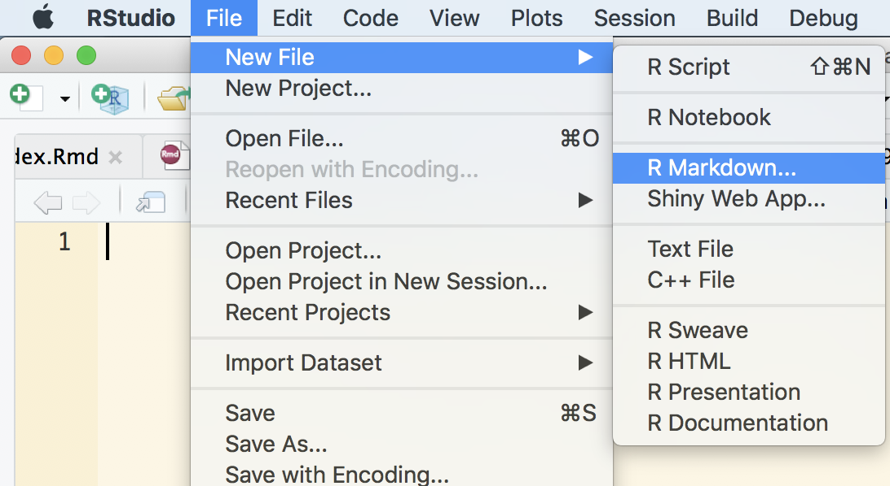
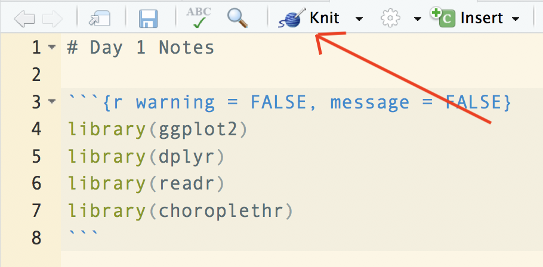
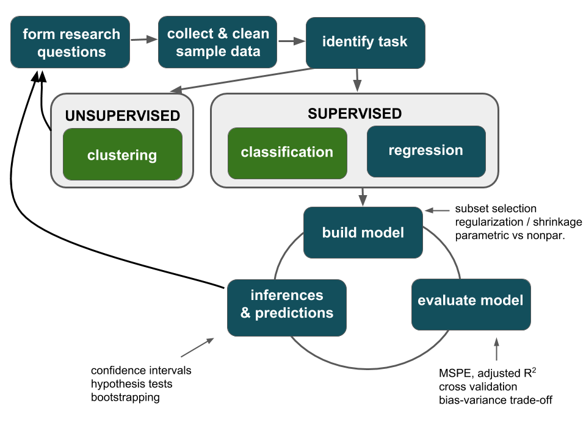
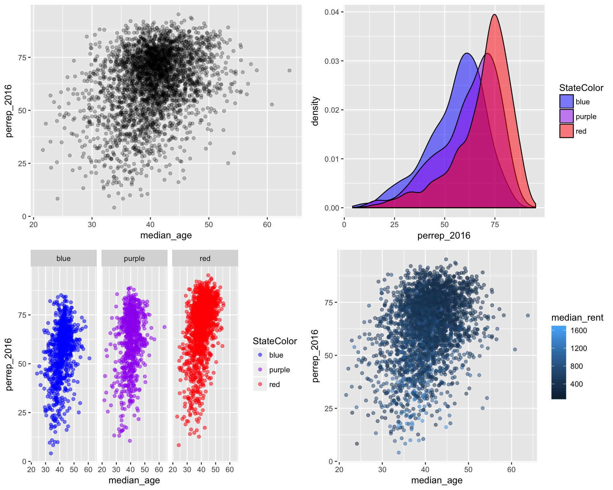
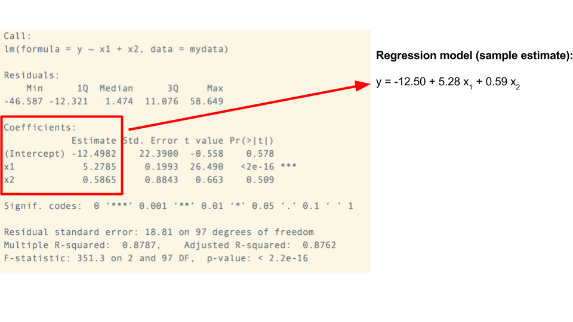

4.1 Day 1: Visualizing & Modeling Variability
4.1.1 Getting Started
If you arrive early, now’s a good time to get started! Find today’s notes at https://ajohns24.github.io/IMA_bootcamp_2018/day-1-visualizing-modeling-variability.html & take the following steps:
Open a new RMarkdown (Rmd) document:

- Erase everything in the Rmd. At the top, type the following:
# Day 1 Notes```{r warning = FALSE, message = FALSE} library(ggplot2) library(dplyr) library(readr) library(choroplethr) ```
Knit your document! It’s helpful to do this early and often. If you get any errors, it’s likely because you haven’t yet installed the packages above. If this is the case, return to Exercise 1 of the pre-bootcamp homework.

Overall workshop plan (& how it ties in with the machine learning module):

Today’s plan:
- Welcome / intros
A motivating example with a pre-bootcamp homework recap
Visualizing relationships
Modeling relationships with linear regression
4.1.2 Pre-Boot Camp Review
Statistics is the practice of using data from a sample to make inferences about some broader population of interest.
Data is a key word here. In the pre-bootcamp homework, you explored the first simple steps of a statistical analysis: familiarizing yourself with the structure of your data and conducting some simple univariate analyses. We’ll build upon this foundation in a motivating example.
The Story:
Since the 2016 election, people have examined the following questions:
- How did Trump’s support vary from county to county?
- How does this compare to trends in past elections?
- In what ways was Trump’s support associated with county demographics?
We’ll explore these questions using county-level election outcomes made available by Tony McGovern on github:
elect<-read.csv("https://www.macalester.edu/~dshuman1/ima/bootcamp/data/county_election_results.csv")Explore the structure of the data
# Check out the first rows of elect. ID the cases & variables # How much data do we have? # What are the variable names? # Compute the total votes nationwide for each party
Explore
win_2016(categorical)# Construct a bar chart ggplot(___, aes(___)) + geom____()
Explore
perrep_2016(quantitative)# Blank canvas ggplot(elect, aes(x = perrep_2016)) # Histogram ggplot(elect, aes(x = perrep_2016)) + geom____() # Density plot ggplot(elect, aes(x = perrep_2016)) + geom____()
Numerically summarize the trend & variability in
perrep_2016# Trump's mean & median support # Variance & st dev in Trump's support # Calculate the exact 2.5th & 97.5th percentiles
4.1.3 Explaining Variability
The main goal in statistical modeling is often to explain the variation in one particular variable from case to case (the response variable) using the values of one or more other variables (the explanatory or predictor variables).
THINK
We now have a good sense for the trends & variability in Trump’s support from county to county. What other variables (ie. county features) might explain some of this variability?
In examining relationships between variables, we distinguish between the response & predictors:
response variable: Trump’s percent of the vote
(the variable whose variability we would like to explain)predictors (aka explanatory variables aka features): percent white, per capita income, state color, etc
(variables that might explain some of the variability in the response)
None of these predictors are contained within the elect data, but we’re in luck:
the
df_county_demographicsdata set within thechoroplethrpackage contains county level demographic datathe
RedBlueStatesdata at https://www.macalester.edu/~ajohns24/Data/RedBluePurple.csv categorizes each county as belonging to a blue/red/purple state based on state categorizations at http://www.270towin.com/.
JOINING DATA SETS
Step 1: load new data
Think: What are the sources of these data? When were they collected? Do they suit our purposes?
# Load demographic data from choroplethr package
data("df_county_demographics")
head(df_county_demographics, 3)
## region total_population percent_white percent_black percent_asian
## 1 1001 54907 76 18 1
## 2 1003 187114 83 9 1
## 3 1005 27321 46 46 0
## percent_hispanic per_capita_income median_rent median_age
## 1 2 24571 668 37.5
## 2 4 26766 693 41.5
## 3 5 16829 382 38.3
# Load RedBluePurple data
RedBlue <- read.csv("https://www.macalester.edu/~ajohns24/Data/RedBluePurple.csv")
head(RedBlue, 3)
## region polyname abb StateColor
## 1 1001 alabama AL red
## 2 1003 alabama AL red
## 3 1005 alabama AL red
Step 2: join the 3 datasets into a single dataset
The 3 data sets (elect, df_county_demographics, RedBlue) need to share a common identifying variable. In this case, they all contain the region variable, and we can join them according to it:
# Join elect and df_county_demographics
all_data <- left_join(df_county_demographics, elect,by=c("region"="region"))
# Join all_data with RedBlue
all_data <- left_join(all_data, RedBlue,by=c("region"="region"))
names(all_data)
## [1] "region" "total_population" "percent_white"
## [4] "percent_black" "percent_asian" "percent_hispanic"
## [7] "per_capita_income" "median_rent" "median_age"
## [10] "county" "total_2008" "dem_2008"
## [13] "gop_2008" "oth_2008" "total_2012"
## [16] "dem_2012" "gop_2012" "oth_2012"
## [19] "total_2016" "dem_2016" "gop_2016"
## [22] "oth_2016" "perdem_2016" "perrep_2016"
## [25] "winrep_2016" "perdem_2012" "perrep_2012"
## [28] "winrep_2012" "polyname" "abb"
## [31] "StateColor"
Step 3: if all else fails…
If you run into errors (likely due to a missing package), you can load the data from here:
```r
all_data <- read.csv("https://www.macalester.edu/~ajohns24/Data/electionDemographics16.csv")
```
4.1.4 Visualizing Relationships
Basic Rules for Constructing Visualizations
Instead of memorizing which plot is appropriate for which situation, it’s best to recognize patterns in constructing viz:
Each quantitative variable requires a new axis. If we run out of axes, we can illustrate the scale of a quantitative variable using color or discretize it into groups & treat it as categorical.
Each categorical variable requires a new way to “group” the graphic (eg: using colors, shapes, separate facets, etc to capture the grouping)
It is helpful to visual the data table. Here arejust 6 counties:
| perrep_2016 | perrep_2012 | median_rent | StateColor | winrep_2016 | abb |
|---|---|---|---|---|---|
| 73.53 | 72.52 | 948 | blue | TRUE | CO |
| 35.82 | 41.37 | 742 | purple | FALSE | GA |
| 46.55 | 44.91 | 582 | blue | TRUE | MN |
| 79.95 | 75.11 | 391 | red | TRUE | MS |
| 80.15 | 72.84 | 420 | purple | TRUE | MO |
| 87.94 | 83.75 | 367 | red | TRUE | OK |
THINK
Before visualizing the relationships among these variables, we need to understand what features these should have. How might we visualize the relationships among the following sets of variables:
perrep_2016vsperrep_2012
perrep_2016vsStateColor
perrep_2016vsperrep_2012andStateColor(in 1 plot)
perrep_2016vsperrep_2012andmedian_rent(in 1 plot)
perrep_2016vsStateColorandwinrep_2016(in 1 plot)
Run through the following exercises which introduce different approaches to visualizing relationships. In doing so, don’t just construct a plot, examine what it tells us about relationship trends & strength (degree of variability from the trend) as well as outliers or deviations from the trend. For each plot, think: what’s the take-home message?
Scatterplots of 2 quantitative variables
Each quantitative variable has an axis. Each case is represented by a dot.# Start with a blank canvas ggplot(all_data, aes(y = perrep_2016, x = perrep_2012)) # Add a scatterplot layer ggplot(all_data, aes(y = perrep_2016, x = perrep_2012)) + geom_point() # Use text labels instead of points ggplot(all_data, aes(y = perrep_2016, x = perrep_2012)) + geom_text(aes(label = abb)) # Another predictor ggplot(all_data, aes(y = perrep_2016, x = median_rent)) + geom_point() # Another predictor ggplot(all_data, aes(y = perrep_2016, x = percent_white)) + geom_point()
Side-by-side plots of 1 quantitative variable vs 1 categorical variable
# Density plots by group ggplot(all_data, aes(x = perrep_2016, fill = StateColor)) + geom_density() # Add transparency & fix colors ggplot(all_data, aes(x = perrep_2016, fill = StateColor)) + geom_density(alpha = 0.5) + scale_fill_manual(values = c("blue","purple","red")) # Split groups into separate plots ggplot(all_data, aes(x = perrep_2016, fill = StateColor)) + geom_density() + scale_fill_manual(values = c("blue","purple","red")) + facet_wrap( ~ StateColor) # Histograms instead ggplot(all_data, aes(x = perrep_2016, fill = StateColor)) + geom_histogram() + scale_fill_manual(values = c("blue","purple","red")) + facet_wrap( ~ StateColor) # Side-by-side box plots ggplot(all_data, aes(x=StateColor,y = perrep_2016, fill = StateColor)) + geom_boxplot() + scale_fill_manual(values = c("blue","purple","red")) # Change to individual states ggplot(all_data, aes(x=abb,y = perrep_2016, fill = StateColor)) + geom_boxplot() + scale_fill_manual(values = c("blue","purple","red"))
Scatterplots of 1 quantitative variable vs 1 categorical & 1 quantitative variable
Ifpercent_whiteandStateColorboth explain some of the variability inperrep_2016, why not include both in our analysis?! Let’s.# Scatterplot colored by group ggplot(all_data, aes(y = perrep_2016, x = percent_white, color = StateColor)) + scale_color_manual(values = c("blue","purple","red")) + geom_point(alpha = 0.5) # Scatterplots split by group ggplot(all_data, aes(y = perrep_2016, x = percent_white, color = StateColor)) + geom_point(alpha = 0.5) + scale_color_manual(values = c("blue","purple","red")) + facet_wrap( ~ StateColor)
Plots of 3 quantitative variables
# Scatterplot: use color to represent 3rd variable ggplot(all_data, aes(y = perrep_2016, x = percent_white, color = median_rent)) + geom_point(alpha=0.5) # Scatterplot: discretize the 3rd variable ggplot(all_data, aes(y = perrep_2016, x = percent_white, color = cut(median_rent, 2))) + geom_point(alpha = 0.5)
Extra: Maps!
There is, of course, a geographical component to these data. Though we won’t cover spatial models in bootcamp, the visuals still help us tell a story. If the required
choroplethrMapspackage isn’t working for you, work with a neighbor (don’t spend too much time with this picky package).# Load choroplethrMaps library(choroplethrMaps) # Map of Trump wins all_data <- mutate(all_data, value = winrep_2016) county_choropleth(all_data) # Map of Trump support all_data <- mutate(all_data, value = perrep_2016) county_choropleth(all_data) # Map of percent white all_data <- mutate(all_data, value=percent_white) county_choropleth(all_data)
Glyph-Ready Data
- In the layered grammar of graphics used by
ggplot, we can add different aesthetics (features such as position, size, shape, color) to each glyph (mark/symbol such as a point or bar or density curve)- It is important to recognize that we first need to rearrange the data so that one row (case) of the table corresponds to each glyph. The data we just used were already in this so called “glyph-ready form”
- We’ll talk more as the bootcamp proceeds about how to rearrange data so that they are in this form using data wrangling commands
4.1.5 Linear Regression Models
Just as when exploring single variables, there are limitations in relying solely on visualizations to analyze relationships among 2+ variables. Statistical models provide rigorous numerical summaries of relationship trends. Before going into details, examine the plots below and draw a model that captures the trend of the relationships being illustrated.

Linear regression can be used to model each of these relationships. “Linear” here indicates that the linear regression model of a response variable is a linear combination of explanatory variables. It does not mean that the relationship itself is linear!! In general, let \(y\) be our response variable and (\(x_1, x_2, ..., x_k\)) be \(k\) explanatory variables. Then the (population) linear regression model of \(y\) vs the \(x_i\) is
\[y = \beta_0 + \beta_1 x_1 + \beta_2 x_2 + \cdots + \beta_k x_k\]
where
\(\beta_0\) = intercept coefficient
average \(y\) value when \(x_1=x_2=\cdots=x_k=0\)\(\beta_i\) = \(x_i\) coefficient
when holding constant all other \(x\), the change \(y\) when we increase \(x_i\) by 1
In RStudio, we construct sample estimates of linear regression models using the lm() (linear model) function. Consider a simple example:
my_model <- lm(y ~ x1 + x2, data = mydata)
summary(my_model)
Today we’ll focus on visualizing, constructing, and interpreting models. We’ll talk more tomorrow about model quality & deviations from the model trend. IMPORTANT: Be sure to interpret the coefficients in a contextually meaningful way that tells the audience about the relationships of interest (as opposed to simply providing a definition).
- Models with 1 quantitative predictor:
perrep_2016vsmedian_ageVisualize the relationship, add a regression line, & construct the regression model:
ggplot(all_data, aes(x = median_age, y = perrep_2016)) + geom_point(alpha = 0.25) + geom_smooth(method = "lm") model1 <- lm(perrep_2016 ~ median_age, data=all_data) summary(model1)Write out the estimated model formula:
perrep_2016 = ___ + ___ median_ageInterpret all model coefficients.
- Models with 1 categorical predictor:
perrep_2016vsStateColorVisualize the relationship.
ggplot(all_data, aes(x = perrep_2016, fill = StateColor)) + geom_density(alpha = 0.5)It doesn’t make sense to capture the trend of this relationship by fitting a line to the data. Rather, the trend can be captured by the mean Trump support in each group (ie. the location of the densities). This requires new syntax:
# Group by StateColor & summarize the means all_data %>% group_by(StateColor) %>% summarize(means = mean(perrep_2016, na.rm = TRUE))
Construct the regression model and write out the estimated model formula:
perrep_2016 = ___ + ___ StateColorpurple + ___ StateColorredmodel2 <- lm(perrep_2016 ~ StateColor, data = all_data) summary(model2)- Huh?! RStudio splits categorical predictors up into a reference group (the first alphabetically) and indicators for the other groups. Here,
bluestates are the reference group and \[\text{StateColorpurple} = \begin{cases} 1 & \text{ if purple} \\ 0 & \text{ otherwise} \\ \end{cases} \;\;\;\; \text{ and } \;\;\;\; \text{StateColorred} = \begin{cases} 1 & \text{ if red} \\ 0 & \text{ otherwise} \\ \end{cases}\] In other words, theStateColorvariable is turned into 3 “dummy variables”: \[\left(\begin{array}{c} \text{red} \\ \text{purple} \\ \text{purple} \\ \text{blue} \\ \text{red} \end{array}\right) \;\;\; \to \;\;\; \text{StateColorblue} = \left(\begin{array}{c} 0 \\ 0 \\ 0 \\ 1 \\ 0 \end{array}\right), \;\; \text{StateColorpurple} = \left(\begin{array}{c} 0 \\ 1 \\ 1 \\ 0 \\ 0 \end{array}\right), \;\; \text{StateColorred} = \left(\begin{array}{c} 1 \\ 0 \\ 0 \\ 0 \\ 1 \end{array}\right)\] Since these sum to 1, we only need to put 2 into our model and leave the other out as a reference level. With these ideas in mind, interpret all coefficients in your model. HINTS:- plug in 0’s and 1’s to obtain 3 separate models for the blue, purple, and red states
- revisit the calculation of the group means
- Models with 1 quantitative predictor & 1 categorical predictor:
perrep_2016vsmedian_ageandStateColorVisualize the relationship, add a regression line, & construct the regression model. NOTE: Unfortunately, as you’ll see in homework, the
geom_smoothlines here don’t directly correspond to the model.ggplot(all_data, aes(x = median_age, y = perrep_2016, color = StateColor)) + geom_point(alpha = 0.25) + geom_smooth(method = "lm") model3 <- lm(perrep_2016 ~ median_age + StateColor, data = all_data) summary(model3)Write out the estimated model formula:
perrep_2016 = ___ + ___ median_age + ___ StateColorpurple + ___ StateColorredAgain, the presence of a categorical variable results in the separation of the model formula by group. To this end, plug in 0’s and 1’s to obtain 3 separate model formulas for the blue, purple, and red states:
perrep_2016 = ___ + ___ median_age.Putting it all together, interpret all coefficients in your model.
NOTE
The
median_agecoefficient inmodel3differs from that inmodel1and theStateColorcoefficients inmodel3differ from those inmodel2. This is because a predictor’s coefficients are defined / interpreted differently depending on what other predictors are in the model.
- Models with 2 quantitative predictors:
perrep_2016vsmedian_ageandmedian_rentVisualize the relationships and construct the regression model:
ggplot(all_data, aes(y = perrep_2016, x = median_age, color = median_rent)) + geom_point(alpha = 0.5) model4 <- lm(perrep_2016 ~ median_age + median_rent, data = all_data) summary(model4)Write out the estimated model formula:
perrep_2016 = ___ + ___ median_age + ___ median_rentIs this the formula for a line? Multiple lines? A plane?
Interpret all coefficients in your model.
Models with 2 categorical predictors:
perrep_2016vsStateColorandincome_bracket
For illustration’s sake, let’s split countyper_capita_income(in $) into 2 income brackets: above or below $25,000:# Define income brackets all_data <- all_data %>% mutate(income_bracket = cut(per_capita_income, breaks = c(0,25000,65000), labels = c("low","high")))Visualize the relationship and construct the model.
ggplot(all_data, aes(x = perrep_2016, fill = income_bracket)) + geom_density(alpha = 0.5) + facet_wrap(~ StateColor) model5 <- lm(perrep_2016 ~ StateColor + income_bracket, data = all_data) summary(model5)Write out the estimated model formula.
- Interpret all coefficients in your model. HINTS:
- plug in 0’s and 1’s for both the
StateColorandincome_bracketvariables
- how many possible combinations are there of these 2 variables?
- plug in 0’s and 1’s for both the